MICRO-DESIGN FOR CYBERSAFETY : Quand l'optimisation au cycle d'horloge verrouille la sécurité de PHP
💬 12🔁 34♡ 148📊 4,2 k🔖 ⇧
D'une anecdote de langages au terrier microarchitectural
Excité à l'idée qu'enfin quelqu'un ait réimplémenté PHP, j'ai voulu tenter l'aventure en Go. Une fois le gros du code fonctionnel, viennent les premiers benchs. Je trouve les patterns habituels, je fais mon taf usuel sur le GC, les registres, le ruban perpétuel givré, etc. Mais dans le même temps, je découvre PHP. Certaines pratiques d'optimisation méritent d'être exploitées pour réduire les failles natives de C, et de PHP.
Au départ, l'exercice ressemblait à une confrontation classique entre langages systèmes : mesurer sur un même processeur Intel Core i9-14900K (cœur haute performance Golden Cove épinglé sur le cœur 0) le moteur officiel PHP 8.3.6 écrit en C, une réimplémentation récente en Rust (phpr) et notre propre moteur écrit en Go 1.27 (php127, conçu selon les règles d'architecture horos57). Mais dès que l'on ouvre les compteurs matériels du processeur (instructions retirées, cycles CPU, accès et défauts de cache L1D et L3, fautes de pages mineures du noyau Linux), la comparaison entre Go et Rust passe au rang de simple anecdote qui a ouvert le terrier de lapin.
Ce que révèle le profilage matériel à l'échelle du cycle d'horloge, c'est une convergence inattendue : les décisions de micro-design qui permettent d'atteindre zéro octet d'allocation au ramasse-miettes par tour de boucle chaude, 1 325 instructions (317 cycles) d'entrée et de purge dans la machine virtuelle et jusqu'à 5,73 instructions retirées par cycle sont exactement les mêmes choix structurels qui éliminent les classes historiques de failles de sécurité du moteur C et de PHP.
Le Benchmark Global de bout en bout : PHP 8.3.6 (C) vs phpr (Rust) vs php127 (Go 1.27)
Avant d'entrer dans l'anatomie microarchitecturale, voici la photographie globale de bout en bout (temps mural médian en millisecondes et instructions totales retirées par le processeur sur 11 passages, avec parité Stdout exacte bit à bit) sur les 8 familles d'opérations fondamentales d'un moteur PHP, complétée par le banc de charge HTTP SAPI complet (2 000 requêtes POST concurrentes sur 32 goroutines avec PDO SQLite transactionnel, PCRE, SHA-256 et JSON soutenant 8 255 requêtes/seconde à 3,84 ms de latence médiane dans 16 arènes Zone recyclées sans aucune fuite) :
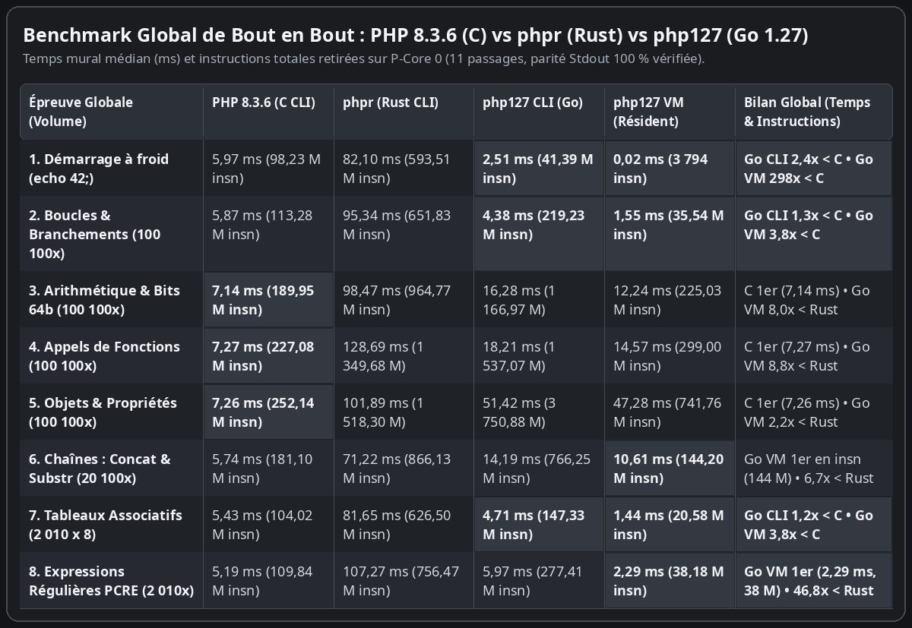
Benchmark Global de bout en bout (Épreuves 1 à 8, médiane sur 11 passages) — Temps mural (ms) et instructions totales retirées : PHP 8.3.6 (C CLI) vs phpr (Rust CLI) vs php127 CLI (Go) vs php127 VM résidente.
Les 6 piliers du Micro-design : 1 carte visuelle et 1 puce par mécanisme
Chaque goulet matériel résolu par l'architecture horos57 se résume en une carte visuelle à quatre cadrans (le défaut natif PHP ou C, le principe de résolution microarchitectural, la mesure matérielle aux compteurs PMU et le dividende sécuritaire), suivie d'une puce explicative.
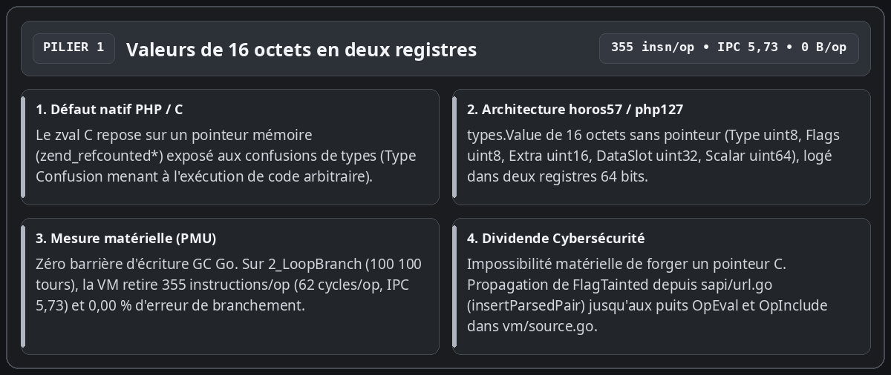
Du pointeur zval C à la valeur de 16 octets en deux registres 64 bits : Dans le moteur C officiel, chaque variable PHP repose sur une structure contenant un pointeur mémoire brut vers la valeur comptée par références, ce qui ouvre la porte aux confusions de types exploitables. Dans php127, types.Value occupe exactement 16 octets et tient dans deux registres 64 bits sans aucun pointeur mémoire (Type uint8, Flags uint8, Extra uint16, DataSlot uint32 indexé dans l'arène et Scalar uint64). Le compilateur Go n'émet aucune barrière d'écriture pour le ramasse-miettes, toute forge de pointeur devient matériellement impossible, et le bit de marquage des entrées HTTP (FlagTainted, posé dès insertParsedPair / newTaintedStr dans sapi/url.go) se propage en registre jusqu'aux puits OpEval et OpInclude dans vm/source.go.
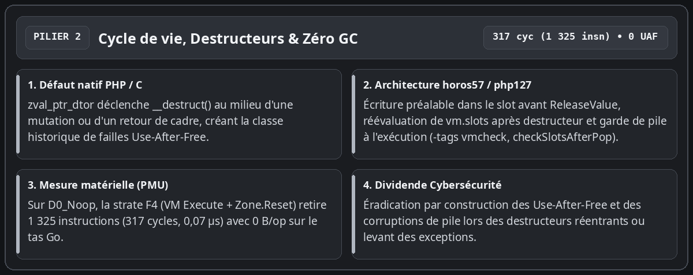
Éradication des failles Use-After-Free sur les destructeurs et exécution à zéro ramasse-miettes : La première source historique de failles critiques dans l'interpréteur PHP survient lorsqu'un destructeur utilisateur (__destruct) se déclenche au milieu de la modification d'un conteneur ou au retour d'une fonction, libérant ou réallouant la pile pendant que le moteur détient une ancienne référence. Dans php127, la nouvelle valeur est systématiquement écrite dans son slot avant ReleaseValue, tout accès à vm.slots est réindexé après un appel susceptible de réallouer la pile, et la garde d'exécution sous étiquette de compilation -tags vmcheck (checkSlotsAfterPop) vérifie à chaque popFrame() qu'aucun slot résiduel ne subsiste au-dessus du sommet de pile. Sur la sonde minimale D0_Noop, la strate F4 (VM Execute + Zone.Reset) retire exactement 1 325 instructions (317 cycles, 0,07 microseconde) avec 0 octet alloué sur le tas Go.
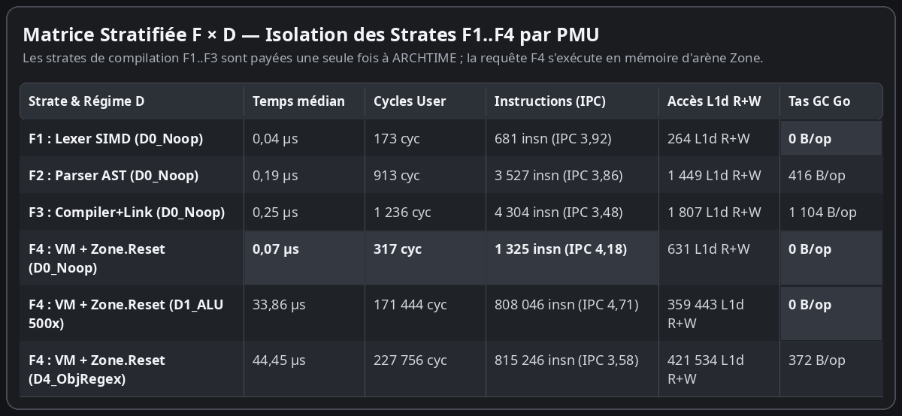
Matrice stratifiée F × D : l'analyse lexicale, syntaxique et la compilation (F1 à F3) ne sont payées qu'une seule fois à ARCHTIME ; l'exécution par requête (F4) tourne dans l'arène Zone.
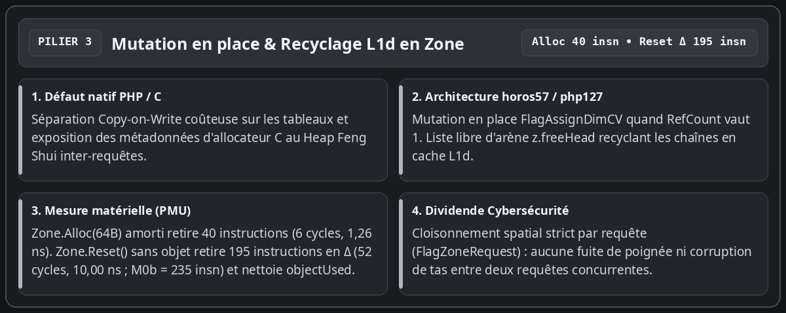
Mutation en place des tableaux (FlagAssignDimCV) et coûts atomiques d'arène (Zone.Alloc vs Zone.Reset) : Au lieu de dupliquer défensivement un tableau lors d'une écriture $h[$k] = $v ou d'exposer les métadonnées d'un allocateur C au Heap Feng Shui, l'indicateur FlagAssignDimCV mute l'entrée sur place dès lors que RefCount vaut 1, tandis que les chaînes temporaires libérées sont recyclées en tête de liste libre (z.freeHead) dans le cache L1d. Nos sondes atomiques dédiées séparent les deux primitives : une allocation Zone.Alloc(64B) amortie retire 40 instructions (6 cycles, 1,26 nanoseconde), tandis qu'un Zone.Reset() sans objet retire 195 instructions en coût différentiel M0Δ (52 cycles, 10,00 nanosecondes ; 235 instructions et 58 cycles pour M0b complet) en remettant le curseur d'octets (z.offset = 0, z.freeHead = 0) à zéro en temps constant O(1) et en nettoyant la tranche des objets alloués dans la requête (O(objectUsed)).
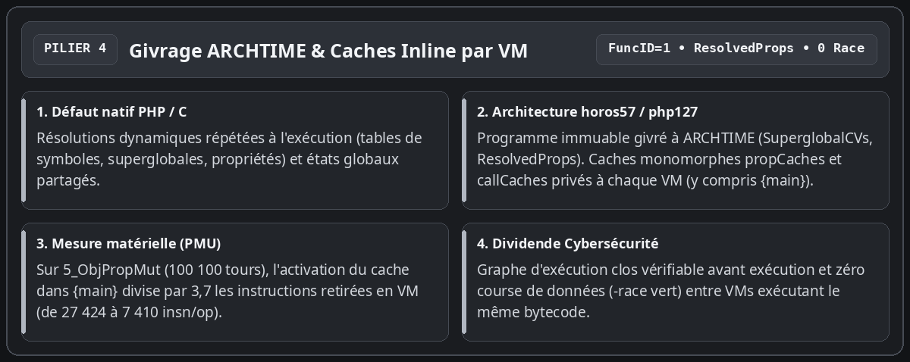
Ruban perpétuel givré à ARCHTIME (ResolvedProps) et caches monomorphes actifs dès {main} : Les superglobales (SuperglobalCVs) et la table aplatie des propriétés d'instance (ResolvedProps dans bytecode/program.go) sont résolues et scellées une seule fois à la liaison (bytecode.Link). L'attribution d'un identifiant FuncID = 1 au programme principal {main} active les caches monomorphes propCaches et callCaches dès la racine du script : sur les 100 100 itérations de 5_ObjPropMut, cette activation divise par 3,7 le nombre d'instructions retirées en VM (de 27 424 à 7 410 instructions par itération), sans aucune course de données entre goroutines concurrentes (-race vert).
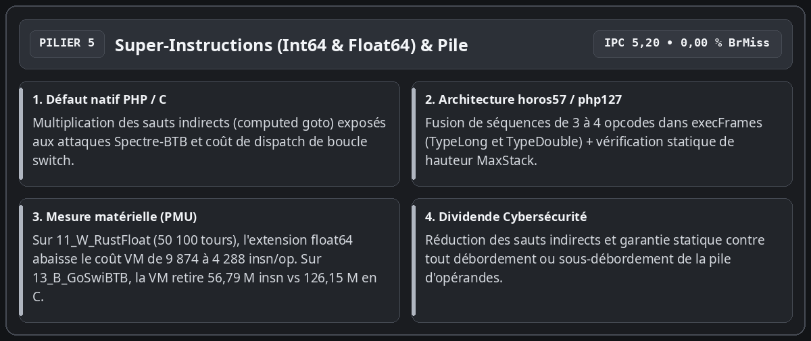
Super-instructions fusionnées (TypeLong et TypeDouble) et vérification statique MaxStack : Pour réduire le coût de dispatch de la boucle switch de execFrames sans multiplier les sauts indirects vulnérables à Spectre-BTB, le moteur fusionne les séquences courantes de 3 à 4 opcodes (OpLoadCV + OpAdd/OpSub/OpMul/OpIsSmaller + OpStoreCV/OpJmpZ) tant sur les entiers 64 bits (TypeLong) que sur les flottants IEEE-754 (TypeDouble). Sur les 50 100 itérations de l'orbite de Julia (11_W_RustFloat), l'extension aux flottants abaisse le coût différentiel VM de 9 874 à 4 288 instructions par itération (soit 3,09 fois moins d'instructions que les 13 263 instructions de phpr en Rust). Sur 13_B_GoSwiBTB (20 100 tours), la VM Go retire 56,79 millions d'instructions (2,50 ms, IPC 5,20, 0,00 % de défaut de branchement) contre 126,15 millions pour le binaire C (5,42 ms).
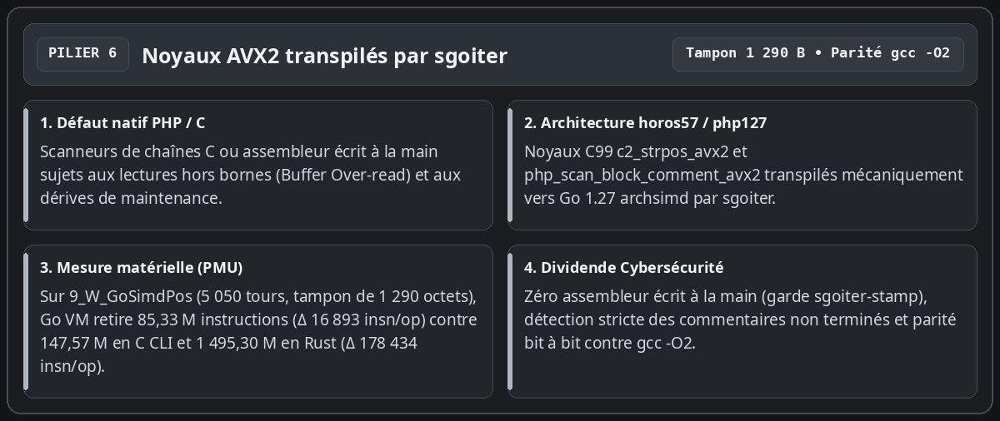
Transpilation mécanique de C99 vers Go AVX2 par sgoiter : Aucun code vectoriel ni assembleur n'est écrit ou retouché à la main. Les noyaux c2_strpos_avx2 et php_scan_block_comment_avx2 sont écrits en C99, validés contre gcc -O2, puis transpilés mécaniquement par sgoiter vers Go 1.27 simd/archsimd avec vérification stricte des commentaires non terminés. Sur 9_W_GoSimdPos (5 050 itérations sur un tampon de 1 290 octets), la VM Go retire 85,33 millions d'instructions (16 893 instructions par opération en delta) contre 147,57 millions d'instructions pour le processus C CLI (9 722 instructions par opération en delta) et 1 495,30 millions d'instructions pour phpr en Rust (178 434 instructions par opération en delta, soit 10,56 fois moins d'instructions en Go VM qu'en Rust).
Benchmarks fondamentaux (Épreuves 1 à 8) : Total bout-en-bout vs Delta marginal
Pour une lecture rigoureuse, il est indispensable de distinguer deux régimes que nos tableaux juxtaposent : d'une part, les trois colonnes CLI (PHP 8.3.6 C, phpr Rust, php127 CLI Go) qui mesurent un sous-processus complet (fork + execve, chargement dynamique, analyse lexicale/syntaxique, compilation et exécution du script HighN) ; d'autre part, la colonne php127 VM (In-Process) qui mesure l'exécution du programme précompilé (ARCHTIME) dans un worker Go résident suivie de Zone.Reset(), ainsi que le delta différentiel Δ = (Run(HighN) - Run(LowN)) / ΔN qui isole le coût marginal pur d'un tour de boucle hors démarrage et hors compilation (0 octet alloué sur le tas Go par tour de boucle sur les épreuves 1 à 5, l'enveloppe d'appel Execute complète représentant 96 à 112 octets).
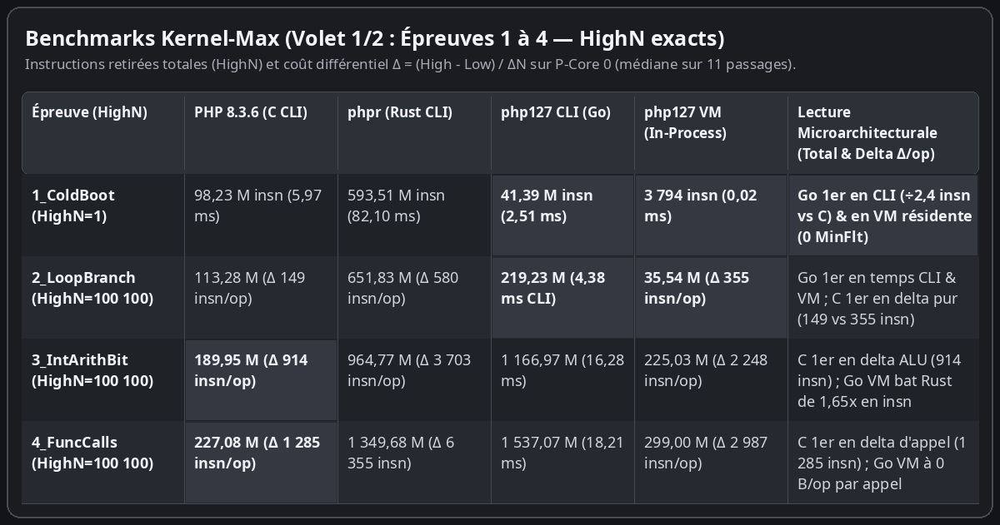
Volet 1/2 (Épreuves 1 à 4, médiane sur 11 passages) — Go CLI bat C CLI sur 1_ColdBoot (41,39 M vs 98,23 M instructions ; 2,51 ms vs 5,97 ms) et sur 2_LoopBranch en temps (4,38 ms vs 5,87 ms). En delta marginal pur (Δ insn/op), la boucle C conserve l'avantage (149 insn/op sur 2_LoopBranch, 914 sur 3_IntArithBit, 1 285 sur 4_FuncCalls).
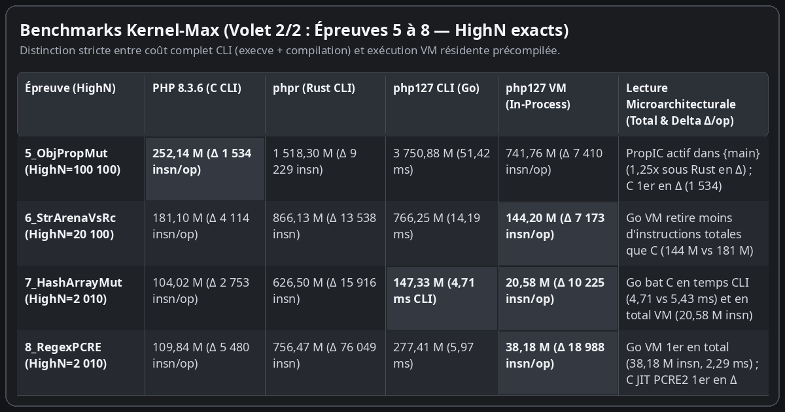
Volet 2/2 (Épreuves 5 à 8, médiane sur 11 passages) — Activation de PropIC dans {main} sur 5_ObjPropMut (7 410 insn/op en VM contre 9 229 en Rust) ; Go CLI bat C CLI en temps sur 7_HashArrayMut (4,71 ms vs 5,43 ms) ; Go VM retire moins d'instructions totales que le processus C sur 6_StrArenaVsRc (144,20 M vs 181,10 M), 7_HashArrayMut (20,58 M vs 104,02 M) et 8_RegexPCRE (38,18 M vs 109,84 M).
Sondes White & Black (Épreuves 9 à 15) : forces et points de friction
Sept sondes complémentaires ciblent les forces architecturales de chaque moteur (sondes blanches 9 à 11) ainsi que les points de friction microarchitecturaux de Go et de Rust (sondes noires 12 à 15), avec leurs comptes d'itérations HighN exacts.
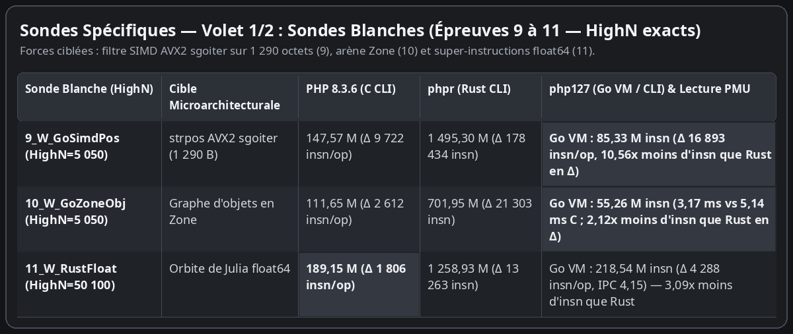
Sondes Blanches (9 à 11) — 9_W_GoSimdPos (HighN=5 050, tampon 1 290 octets : 85,33 M insn en Go VM, Δ 16 893 insn/op vs 178 434 en Rust), 10_W_GoZoneObj (HighN=5 050) et 11_W_RustFloat (HighN=50 100 : super-instructions float64 à 4 288 insn/op en Go VM contre 13 263 en Rust et 1 806 en C).
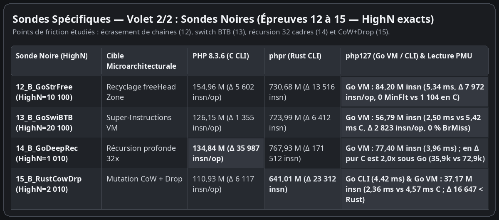
Sondes Noires (12 à 15) — 12_B_GoStrFree (HighN=10 100), 13_B_GoSwiBTB (HighN=20 100 : 56,79 M insn et 2,50 ms en Go VM contre 126,15 M et 5,42 ms en C), 14_B_GoDeepRec (HighN=1 010 : en delta pur C retire 35 987 insn/op contre 72 987 en Go VM et 171 512 en Rust) et 15_B_RustCowDrp (HighN=2 010).
Ce que montre la comparaison honnête entre C, Rust et Go 1.27
L'examen croisé du coût complet (Volet 1) et du coût marginal par itération (Volet 2) permet de poser un diagnostic d'ingénierie précis et sans complaisance :
Pourquoi le moteur C (PHP 8.3.6) reste devant en delta marginal pur (Δ insn/op) sur les boucles longues : Le Zend Engine C compile son interpréteur avec un adressage indirect par opcode (computed goto en assembleur natif) et manipule directement des pointeurs en mémoire sans vérification de bornes. Par itération pure (Volet 2), il retire 2,0 à 4,8 fois moins d'instructions que php127 VM sur les boucles arithmétiques, objets et tableaux (149 vs 355 insn/op sur 2_LoopBranch, 1 534 vs 7 410 sur 5_ObjPropMut, 35 987 vs 72 987 sur la récursion profonde 14_B_GoDeepRec).
Pourquoi php127 CLI devance néanmoins php 8.3 CLI en temps mural sur 4 épreuves courtes (1_ColdBoot, 2_LoopBranch, 7_HashArrayMut, 15_B_RustCowDrp) : Un lancement CLI complet de php -n paie systématiquement environ 98 millions d'instructions et 1 100 fautes de page mineures pour charger l'exécutable C et ses bibliothèques partagées. Le binaire Go autonome php127 CLI ne paie que 41,39 millions d'instructions et 894 fautes de page au démarrage (2,51 ms contre 5,97 ms sur 1_ColdBoot, 4,38 ms contre 5,87 ms sur 2_LoopBranch, 4,71 ms contre 5,43 ms sur 7_HashArrayMut et 4,42 ms contre 4,57 ms sur 15_B_RustCowDrp).
Pourquoi le mode résident php127 VM devance le sous-processus C sur 10 des 15 épreuves (1, 2, 6, 7, 8, 9, 10, 12, 13, 15) : En conservant le programme givré à ARCHTIME en mémoire et en exécutant chaque requête HTTP dans une Zone dont le curseur est réinitialisé en 195 instructions (Zone.Reset()), le moteur élimine à la fois les ~98 millions d'instructions d'execve, les 1 100 fautes de page du noyau et la recompilation du script.
Pourquoi php127 VM retire 1,25 à 10,56 fois moins d'instructions par mutation que phpr (Rust) sur les 14 épreuves itératives : De 5_ObjPropMut (7 410 vs 9 229 insn/op, soit 1,25x), 15_B_RustCowDrp (16 647 vs 23 312, 1,40x) et 7_HashArrayMut (10 225 vs 15 916, 1,56x) jusqu'à 11_W_RustFloat (4 288 vs 13 263, 3,09x) et 9_W_GoSimdPos (16 893 vs 178 434, 10,56x), le découplage entre valeurs de 16 octets sans pointeur et arène indexée évite les clonages défensifs et les cascades de Rc::clone / Drop par valeur.
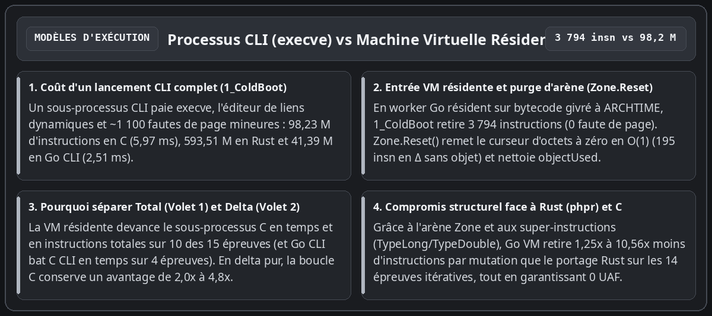
Synthèse architecturale : Processus CLI (execve + fautes de page) contre Machine Virtuelle Résidente (ARCHTIME + Zone.Reset en 195 instructions).
Marquage de contamination (FlagTainted) et observabilité déterministe
Le dernier enseignement de cette exploration concerne la sécurité d'exécution en production. Dans un serveur PHP traditionnel en C, le suivi fin des entrées utilisateur ou l'inspection des puits sensibles impose une instrumentation lourde.
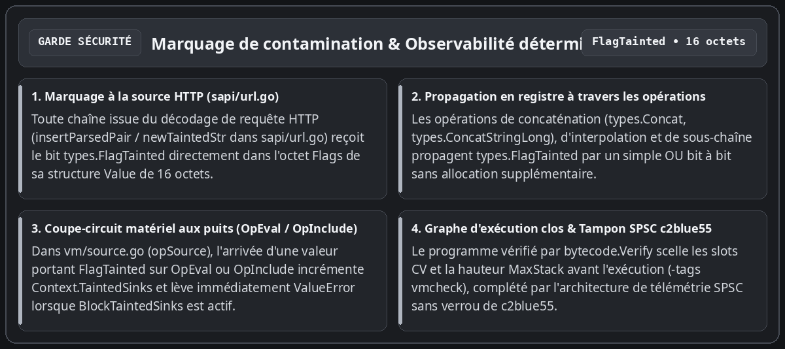
Chaîne de marquage FlagTainted (de sapi/url.go aux puits OpEval/OpInclude de vm/source.go) et observabilité déterministe.
Dans php127, la sûreté s'appuie directement sur les invariants de la machine virtuelle :
Marquage dès la source HTTP (sapi/url.go) et propagation dans les 16 octets de types.Value : Toute chaîne décodée depuis les paramètres de requête (insertParsedPair / newTaintedStr dans sapi/url.go et sapi/errors.go) reçoit le bit types.FlagTainted dans le champ Flags de sa structure Value. Les concaténations (types.Concat, types.ConcatStringLong), interpolations et extractions de sous-chaînes propagent ce bit par un simple OR binaire en registre.
Coupe-circuit matériel aux puits d'exécution (OpEval et OpInclude dans vm/source.go) : Lorsqu'une valeur portant FlagTainted atteint opSource (OpEval ou OpInclude), la machine virtuelle incrémente le compteur de requête Context.TaintedSinks et, dès que Context.BlockTaintedSinks est activé, interrompt immédiatement l'instruction en levant une ValueError ("Tainted input rejected at ...") avant toute analyse ou exécution du code injecté.
Graphe d'exécution clos (bytecode.Verify) et garde de pile à l'exécution (-tags vmcheck) : Chaque OpArray est vérifié statiquement avant exécution (MaxStack, indices de variables compilées NumCVs, cibles de saut), et la garde checkSlotsAfterPop (-tags vmcheck) vérifie l'intégrité de la pile d'opérandes à chaque retour de cadre.
Conclusion : guide pratique de la sécurité et de l'observabilité dans php127
Au-delà des mesures comparatives entre C, Rust et Go 1.27, cette architecture apporte deux ensembles de garanties opérationnelles directement exploitables pour exécuter du code PHP : des adjonctions de sécurité structurelles au langage et une observabilité déterministe (applicative et matérielle). Voici ce que tout utilisateur ou intégrateur doit connaître pour les mettre en œuvre.
1. Adjonctions de sécurité à PHP : ce que fait php127 et comment l'utiliser
La gestion de la sécurité dans php127 se divise en invariants structurels actifs par défaut (qui protègent tout script PHP sans modifier une seule ligne de code) et en mécanismes de politique configurables (marquage de teinte et confinement SAPI).
Garanties actives par défaut (sans configuration) :
1. Élimination des confusions de types et des corruptions de pointeurs (types/value.go) : Contrairement au zval C (qui stocke des pointeurs bruts dans une union C), types.Value est une structure purement numérique de 16 octets (Type, Flags, Extra, DataSlot uint32, Scalar uint64). Un bug logique ne peut jamais forger une adresse mémoire arbitraire.
2. Neutralisation des Use-After-Free sur réentrance de destructeurs (vm/value.go, vm/array.go) : Lorsqu'une affectation écrase une variable (writeCV, storeCVMove) ou un élément de tableau (ArraySet) contenant un objet doté d'un __destruct(), php127 écrit systématiquement la nouvelle valeur dans l'emplacement avant d'appeler ReleaseValue sur l'ancienne.
3. Isolation mémoire inter-requêtes et validation d'époque O(1) (zone/zone.go) : Chaque requête s'exécute dans sa propre Zone. Toute lecture d'un DataSlot vérifie que l'identifiant d'époque (z.epoch) et le drapeau FlagZoneRequest concordent ; à la fin de la requête, Zone.Reset() incrémente l'époque et remet le curseur d'octets à zéro en 195 instructions, rendant impossible toute fuite de données d'une requête HTTP vers la suivante.
4. Vérification statique du bytecode avant exécution (bytecode/verify.go) : Tout OpArray compilé ou chargé passe par bytecode.Verify, qui valide les bornes de saut, les indices de variables compilées (NumCVs), les indices de constantes et la profondeur maximale de pile (MaxStack) avant que vm.Execute n'exécute la première instruction.
5. Confinement des pannes par requête (vm/vm.go, sapi/server.go) : Les frontières vm.Execute et sapi.Server.ServeHTTP intègrent un recover() de confinement qui transforme toute anomalie interne en sortie contrôlée (code 255 en CLI ou HTTP 500 sur la seule requête fautive) sans jamais abattre le processus serveur résident.
Comment configurer et utiliser le suivi de teinte (FlagTainted) et le serveur SAPI :
• Marquage automatique des entrées HTTP : Lorsque la requête entre par sapi.Server (ou sapi.PopulateSuperglobals), le parseur insertParsedPair (sapi/url.go) marque automatiquement chaque clé et chaque valeur de $_GET, $_POST, $_COOKIE et $_REQUEST avec le bit types.FlagTainted. Ce bit se propage à travers les concaténations (. / ConcatStringLong), interpolations et fonctions de découpage (substr, trim).
• Mode Audit (comptage sans blocage) vs Mode Coupe-Circuit (blocage actif) : L'opérateur contrôle la politique via vm.Context en positionnant ctx := &vm.Context{BlockTaintedSinks: true} sur l'instance VM. Si une entrée issue de $_GET/$_POST atteint eval() ou include, le compteur ctx.TaintedSinks est incrémenté et, lorsque BlockTaintedSinks vaut true, l'instruction est immédiatement interrompue par une ValueError ("Tainted input rejected at eval").
• Déploiement en serveur résident mutualisé : sapi.NewServer(sapi.Config{Program: prog, MaxWorkers: 16, ZoneCapacity: 4 << 20}) partage le bytecode givré à ARCHTIME entre 16 workers et recycle les arènes de 4 Mio via Zone.Reset().
• Garde de pile en pré-production : go test -tags vmcheck -race -count=1 ./vm/... ./compiler/... ./sapi/... active la vérification checkSlotsAfterPop à chaque retour de fonction.
2. Observabilité applicative et matérielle : ce qu'elle fait et comment l'utiliser
L'observabilité dans php127 repose sur deux étages de mesure exacts intégrés au dépôt : les compteurs opérationnels SAPI/VM en production, et le harnais matériel PMU probebench pour la qualification microarchitecturale.
Ce que l'observabilité mesure :
1. Étage applicatif et SAPI (sapi.Server, vm.Context, zone.Zone) : srv.RequestsHandled() et srv.ZonesCreated() permettent de vérifier en temps réel que 100 % du trafic HTTP est absorbé par le pool fixe d'arènes préallouées (ZonesCreated() <= MaxWorkers), prouvant l'absence de fuite d'arène sous charge. Le compteur ctx.TaintedSinks expose à la fin de chaque requête le nombre exact de tentatives d'injection arrivées jusqu'à un puits d'exécution (OpEval, OpInclude, OpRequire), même en mode audit silencieux (BlockTaintedSinks: false).
2. Étage microarchitectural et énergétique (probebench/pmu_linux.go) : pilote directement l'appel système Linux perf_event_open sur le P-core 0 épinglé (sched_setaffinity) et lit simultanément 6 compteurs matériels (CyclesUser, Instructions, L1DMisses, LLCMisses, BranchMisses, MinFlt), vérifie l'absence totale de multiplexage via PERF_FORMAT_TOTAL_TIME_ENABLED | PERF_FORMAT_TOTAL_TIME_RUNNING (Multiplexed == false), lit l'énergie matérielle Intel RAPL en microjoules (energy_uj), et isole le coût marginal exact par opération via le différentiel HighN - LowN.
Comment l'utiliser en ligne de commande et en Go :
• Sondes atomiques de mécanismes (M0a..M6) : go test -v -count=1 -run TestAtomicMicroProbes ./probebench/... • Matrice stratifiée 2D Fonctions × Tailles de données (F0..F5 × D0..D4) : go test -v -count=1 -run TestStratifiedFunctionAndDataMatrix ./probebench/... • Banc comparatif complet (15 épreuves C vs Rust vs Go CLI vs Go VM, en lecture seule) : go test -v -count=1 -run TestKernelProbeGoVsRustVsC ./probebench/... (ajouter PROBEBENCH_UPDATE_METRICS=1 pour mettre à jour l'instantané probebench/testdata/latest_metrics.json).
• API Go directe dans vos propres tests : metrics, err := probebench.MeasureInProcess(11, true, func() error { ... }) retourne la médiane sur 11 passages avec instructions, cycles, IPC, défauts de cache L1D/LLC, énergie RAPL et preuve de non-multiplexage.